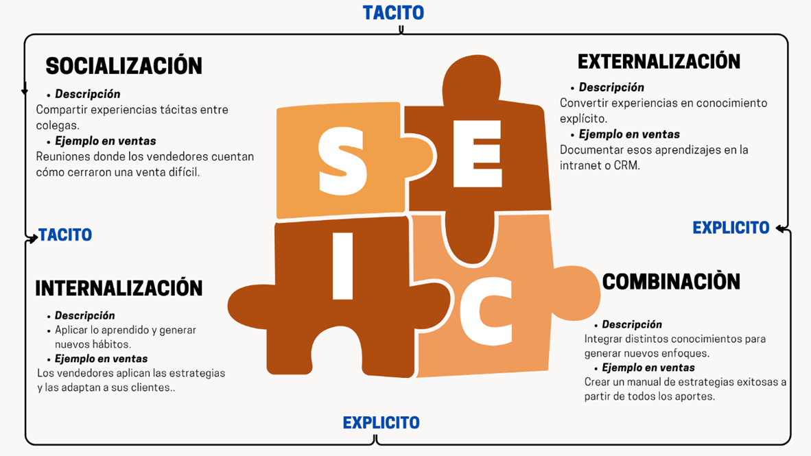

Bienes Mopal S.A. | Estrategias, herramientas y futuro comercial
La **gestión del conocimiento** es un proceso sistemático que busca identificar, capturar, distribuir y aplicar el conocimiento dentro de una organización. Esta perspectiva no se enfoca únicamente en la información concreta, como bases de datos y documentos, sino que también incluye el conocimiento tácito que vive en las personas. Las compañías pueden optimizar la toma de decisiones, promover la innovación y elevar la eficiencia operacional cuando llevan a cabo una estrategia efectiva para gestionar el conocimiento.
“Se demostró que las prácticas de gestión del conocimiento tienen éxito cuando cuentan con respaldo fuerte del liderazgo, una cultura organizacional que favorezca el compartir información, y una infraestructura tecnológica adecuada. Estos factores contribuyen a una mejora en la innovación, productividad, satisfacción del cliente y los resultados financieros.” (Abiola, 2023)
El manejo del conocimiento fomenta las ventas al posibilitar el intercambio de información, prevenir la duplicación de esfuerzos y reducir errores, lo cual resulta en una productividad más alta. La gestión del conocimiento no solo contribuye a que las compañías se mantengan actualizadas con las tendencias de su sector, sino que además les posibilita prever los cambios, garantizándoles estar siempre un paso adelante.
Luego de respondes estas preguntas. Análisis la importancia de la gestión del conocimiento y recuerda lo siguiente…
Las siguientes herramientas facilitan, capturan y organizan compartir el conocimiento dentro del área comercial de Bienes Mopal S,A.
CRM: Video CRM 1 | Video CRM 2
Playlist de YouTube sobre Teams
En Bienes Mopal la herramienta de Teams es la plataforma de comunicación **número 1 oficializada** por la organización.
Las funciones utilizadas dentro de la empresa son las siguientes:
Utilizado en el área de ventas para:
Cómo usar IA para entrenar a los vendedores y resolver dudas de clientes en tiempo real:
Video de YouTube sobre IA en ventas
➡️ Aprende a utilizar la Inteligencia Artificial para potenciar tus habilidades en ventas: Curso IA en ventas (HubSpot)
Utiliza Chat PGT para realizar consultas u obtener textos profesionales.
Otras aplicaciones de IA mencionadas:
Un vendedor que gestiona el conocimiento no solo vende más, sino también enseña a vender mejor.
El equipo de ventas de Solventas trabajaba de forma individual, cada vendedor guardaba sus propios contactos y estrategias. Se perdían oportunidades cuando un vendedor se ausentaba o cambiaba de zona.
“Cuando el conocimiento se comparte, las ventas se multiplican.”
Duración recomendada: **1.5 a 2 minutos**
Estilo: **Animación 2D o video con narración simple y música ligera**
La inteligencia artificial (IA) se ha convertido en un aliado clave para las áreas comerciales modernas. Ya no se trata solo de almacenar datos, sino de convertirlos en **conocimiento útil y estratégico**.
Una empresa de tecnología utilizó IA para analizar conversaciones con clientes. Descubrió que el 70% de las objeciones estaban relacionadas con el tiempo de entrega. Con ese conocimiento, rediseñaron su proceso logístico y aumentaron sus ventas en 18%.
La IA no reemplaza al vendedor, lo potencia con conocimiento en tiempo real.
Entrevistador: ¿Cómo influye la tecnología en la forma de vender hoy?
Experto (Luis García, Consultor en Ventas Digitales): "Antes, el conocimiento estaba en la cabeza de los vendedores veteranos. Hoy, las plataformas digitales permiten que todo el equipo aprenda en conjunto. El conocimiento ya no se guarda, se comparte."
Entrevistador: ¿Qué herramienta considera más útil?
Experto: "Un CRM bien utilizado y una base de conocimiento actualizada. Son la brújula del vendedor moderno."
Entrevistador: ¿Cuál es el futuro de la gestión del conocimiento?
Experto: "La integración total: inteligencia artificial, datos en tiempo real y aprendizaje continuo. El futuro pertenece a los equipos que saben aprender más rápido que su competencia."
El modelo SECI (**S**ocialización, **E**xternalización, **C**ombinación e **I**nternalización) explica cómo se crea conocimiento en las organizaciones.

SOCIALIZACIÓN (Tácito a Tácito)
|
EXTERNALIZACIÓN (Tácito a Explícito)
|
INTERNALIZACIÓN (Explícito a Tácito)
|
COMBINACIÓN (Explícito a Explícito)
|
La infografía describe la evolución de la gestión del conocimiento a través de cuatro eras:
Características: El conocimiento se almacenaba en manuales y archivos físicos. Herramienta Clave: Intranets, archivos compartidos.
Características: Se promueven comunidades de práctica y aprendizaje organizacional. Herramienta Clave: Wikis, foros internos, Google Drive.
Características: Se digitalizan todos los procesos; la nube centraliza la información. Herramienta Clave: CRMs, Slack, Notion, Trello.
Características: La IA y el análisis de datos convierten la información en conocimiento útil. Herramienta Clave: ChatGPT, Power BI, Salesforce Einstein, HubSpot AI.